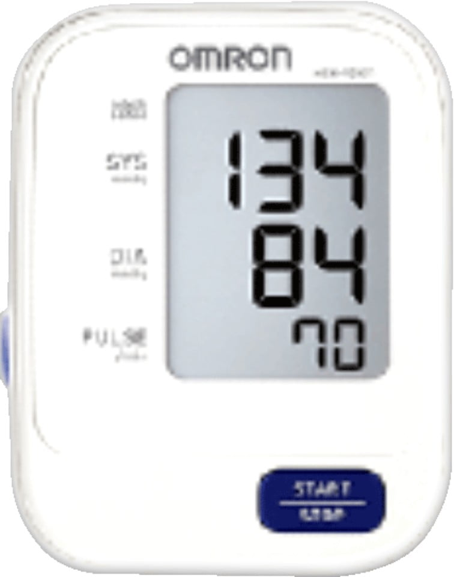

뒤로가기
혈압계 연동 방법
카메라
알람

Omron HEM-9200T
최초 연동 시 아래와 같이 1회만 진행하시면 됩니다.
1.
혈압계 건전지 분리 후 START/STOP 버튼을 3회 누릅니다.
2.
혈압계에 다시 건전지를 넣어주세요.
(P 표시가 보이면 정상 연결)
3.
블루투스 연결 요청 시 허용(등록) 버튼을 눌러주세요.
4.
블루투스 연결 요청 화면에서 PIN 번호를입력해 주세요. (혈압계 아랫면의 PIN번호 확인)
5.
연결 완료!
해당 기기를 통해 혈압 측정 시 자동으로 데이터가 연동됩니다.